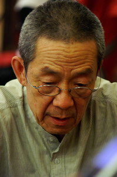
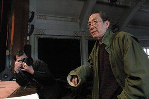
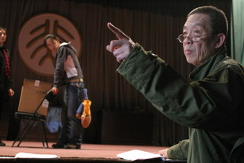
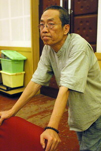

原网站图片说明：林兆华；摄影：朱甲。
创作生涯
旧站将林兆华介绍为林兆华戏剧工作室艺术总监、北京人民艺术剧院导演（前副院长）以及北京大学戏剧研究所所长，并列举了《绝对信号》《红白喜事》《狗儿爷涅槃》《茶馆》等作品。
北京政府网站的文化资料把《绝对信号》（1982）视为其戏剧探索的重要节点，并提到他与林连昆合作的一系列作品，以及他在上世纪九十年代成立独立戏剧团体的经历。
北京人民艺术剧院的公开资料显示，林兆华后来仍参与《茶馆》的复排艺术工作；北京市政府文化演出页面记录了 2026 年《茶馆》演出中“复排艺术指导”一项。
创作方法
公开访谈中，林兆华谈到工作室与剧院机制之间的关系，并强调自己希望在每部戏中发现新的东西，而不是固定为某种流派。这里保留为“受访者自述”，不把它改写成外部评价。
档案说明：旧站写“1989年成立”；部分后来的公开资料写“1990年成立”。新版不替读者选择一个年份，而是明确标出资料差异。
创作节点
以下为便于浏览的精选节点，不等同于完整作品年表。
1957–1961
公开资料显示，林兆华 1957 年考入中央戏剧学院，1961 年进入北京人民艺术剧院。2026 年中央戏剧学院相关研究计划报道再次采用了这一时间线。
1982–1985
《绝对信号》《车站》《野人》构成与高行健合作的重要阶段。相关戏剧研究资料将这一阶段与中国实验戏剧、小剧场的发展联系起来。
1990s–2000s
旧站重点记录《哈姆雷特》《浮士德》《棋人》《三姊妹·等待戈多》《故事新编》《理查三世》《樱桃园》等作品。
影像
全部采用备份内已有图片，不引入未经核验的网络图片。


